As we boarded the plane early on July 26th, little did we
realize what was in store for us in the upcoming two weeks.
19 UCLA students, each of us taking this course for
different reasons, all came together to experience the
Battle of Gettysburg as it happened on July 1-3, 1863 (and
believe me, we didn't leave out one detail!). One might ask
what we could have possibly done in the small town of
Gettysburg for 10 whole days. Would you believe that at the
end of our stay in Gettysburg, we were actually scrambling
to see all the landmarks that we had yet to fit into our
schedule? Lectures, tours, hikes and demonstrations given by
some of the most renowned historians of the Civil War, and
of Gettysburg in particular, including: Gary Gallagher, Matt
Gallman, Gerald Bennett, Gabor Boritt, Wayne Motts, and Glen
LaFantasie made our experience unique. My classmates and I
were not experiencing Gettysburg as the typical tourist,
rather, we were given behind-the-scenes looks at the
struggles of the soldier, the impact the battle had on the
town, and the numerous current debates involving the
accurate interpretation and preservation of Gettysburg.
|
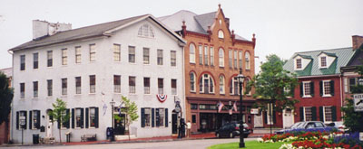
|
|
Gettysburg's town square, otherwise known as "The Diamond".
|
Our days began with breakfast in the Gettysburg College
cafeteria at 8am and ended with us dropping with exhaustion
into our beds in the College Dormitory reserved for our
class. During the first couple days of our trip, we had the
incredible opportunity of retracing the steps of the armies,
guided by Professor Gallagher from the University of
Virginia and author of numerous books on the Civil War.
Providing us with insight each step of the way, many of his
"walking lectures" were accompanied by period photographs
marking the exact place we were standing in the summer of
2000. The feeling was incredible (a little eerie too!) to
know that we were accurately tracing the steps of one of the
bloodiest battles of the war.
|
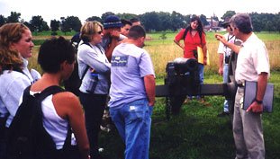
|
|
Prof. Gallagher and UCLA at Gettysburg students.
|
The tours usually began by 9am and continued until 4 in the
afternoon. After hours of making our way up McPherson's
Ridge, over Willoughby's Run, through the wheat fields, past
thickets of trees, and through Devil's Den to Little Round
Top, one would think that we would all be too exhausted to
actually soak in all the details involved with this great
battle. Exhausted we were, disinterested we weren't. Our
days on the battlefield gave each of us a new understanding
and appreciation of the hardships endured by the soldiers as
they fought one of the most important battles of the Civil
War. Following the tours, we would often have a couple
hours to explore the town and enjoy a lively dinner together
before our evening lectures. Each lecture focused on a
different aspect our class had studied while at UCLA,
furthering our knowledge of Gettysburg. It was during these
three days that most of us connected with one aspect of the
battle which we would then focus our research on for the
remainder of the trip.
|
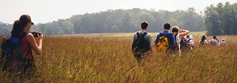
|
|
Students hiking through the wheatfield at GNMP.
|
|
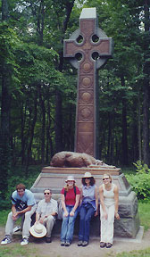
|
|
Students, Professor Waugh and Gallagher of Irish descent at
Irish Brigade Monument
|
Midway through our stay at Gettysburg, our class ventured to
a nearby hotspot of the Civil War, Harpers Ferry. According
to Prof. Waugh, we were going to take a hike in the morning
and explore the town in the afternoon. Beautiful Harpers
Ferry is situated at the confluence of the Potomac River and
Shenandoah Rivers. We stood on the edge of the town in West
Virginia, and looked across the rivers to Maryland on our
left and Virginia to our right (a phenomenon unfamiliar to
most of us native Californians!) As we set across the
bridge to begin our trek up Maryland Heights, none of us
realized that we were in for the hike-of-the-century. This
seven-mile hike definitely tested our endurance and
determination. While making our way up the mountain, there
were numerous placards explaining the importance Maryland
Heights played during the Civil War. We were astounded to
find out that Union soldiers made this same climb pulling
1,500 pound canons on the narrow paths! On our way down, we
stopped on the cliffs overlooking Harpers Ferry and admired
the view. Later, we had some lunch and enjoyed learning the
history of this amazing place from the presentation of a
park ranger dressed in a Union soldiers' uniform. Another
day we will never forget.
|
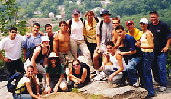
|
|
At the top of the cliffs, Harpers Ferry, WVA
|
|
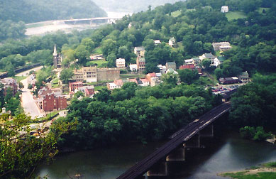
|
|
View of Harpers Ferry at the confluence of the Potomac &
Shenandoah Rivers.
|
The program continued with fascinating lectures by Gerald
Bennett, a prominent local historian; Matthew Gallman,
Professor of Gettysburg College and an expert on the
homefront; Gabor Boritt, Professor and Director of the Civil
War Institute at the College and one of the country's
leading Lincoln scholars; John Latschar, the superintendent
of Gettysburg National Military Park; Glen LaFantasie, who
is writing a book on General Joshua Chamberlain; and Wayne
Motts, one of the storied licensed Gettysburg guides.
Gerald Bennett and Matt Gallman each gave us valuable
insight on the impact the battle had on the town. Matt
Gallman lectured on "What the battle did to the borough"
providing insight about the town's background leading up to
the battle and how the civilians were involved. We could
visualize Gallman's words during Bennett's three-hour
walking tour of the town. This tour opened our eyes to the
importance of one's location during the battle as well as
the overall impact the battle had on the citizens. For
example, holes were still visible in the sides of many
houses. Bullets fired by Confederate sharpshooters made
these holes. By actually walking the town, just like the
battlefield, we could now understand how dramatic and
dangerous the battle proved to be for the citizens of
Gettysburg as war raged literally outside their doorways.
|
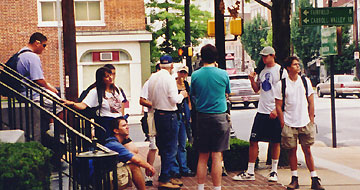
|
|
UCLA students on tour with Gerald Bennett, author of Days of
Uncertainty & Dread.
|
Later in the week, Wayne Motts, a guide for Gettysburg
National Military Park, gave our group a specialized tour of
Pickett's Charge, the doomed Confederate assault on the
well-fortified Union position on Cemetery Ridge. I have to
admit that many of us were not too excited to make this mile
long walk for a second time in the heat and the humidity of
an early August day in Pennsylvania. However, no one denied
that the incredible Wayne Motts gave us a very valuable
insight, regarding the Confederates' attack in the afternoon
of July 3, 1863.
|
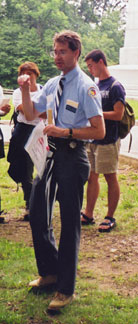
|
|
Wayne Motts, licensed battlefield guide, lecturing on
Pickett's charge.
|
|
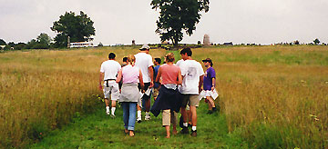
|
|
UCLA students walking Pickett's charge to the high water mark
of the battle.
|
Each of us received the name, and a short bio, of a soldier
from Company D of the 9th Virginia, that participated in
Pickett's Charge. Arranged in one single line, we were then
taught how to march across the field, just as a company in
the Civil War did. We were surprised at how terrible we
were! In fact, we couldn't even march ten feet without
tripping on the person next to us or falling out of rank.
This demonstration proved to us how hard (and important)
drilling was in keeping discipline and order in the ranks.
Now we had even more appreciation and respect for the common
Civil War soldier. At the conclusion of our tour, Wayne
Motts asked us to look at the information regarding the
soldier we were assigned when we first began the tour. He
then separated us into groups: the killed, the wounded and
captured, and those that survived. Although most of us
laughed about the fates of each of our classmates, we also
felt the tragedy and senseless waste of this terrible moment
in the battle. We were learning about the soldier's life in
ways that we never could imagine when reading books.
|
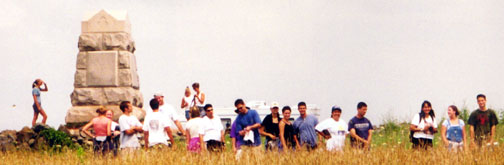
|
|
UCLA students on Cemetery Ridge.
|
Lecture and tours aside, during our last four days in
Gettysburg, every student had her or his own agenda to
complete. Depending on the topic of our research, many of
us went our separate ways in order to find the answers to
our various questions. Some stayed in the beautiful building
that housed the Adams County Historical Society Archives,
where in the morning we heard three short talks by experts
in local history: Dr. Charles Glatfelter, Mr. Ellwood
Christ, and Mr. Timothy Smith. Whether at the Park
Archives, the Cyclorama Library, the Adams County Historical
Society, or various lectures and demonstrations presented by
the park, each student was given the opportunity to research
primary and secondary sources that would shed light upon our
topics. Sifting through the letters written by the generals
and soldiers, the personal accounts of the civilians, and
various papers related to our topics, we began to understand
what it was like to be a historian. Rather than basing our
written assignments solely on published books, and others'
interpretations, we were challenged to make our own
conclusions based on the documents at hand.
|
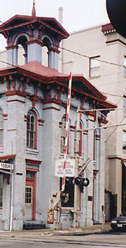
|
|
The GB Railway Station built in 1858, where Pres. Lincoln
arrived on Nov. 18, 1863.
|
We expected to have a great learning experience on our trip;
what was unexpected was the fun we had as well. Who could
forget the "oh-so-real" Ghosts of Gettysburg tour? Walking
through the town late at night in the rain, we listened to
our speaker fill us in on the numerous ghost stories
haunting the town. Did we believe them? I have to admit
that the majority of us didn't, however, we couldn't escape
Gettysburg without being sucked in to one of their cheesy
tourist attractions! The night before we left for
Washington D.C., we all went back in the day as we dressed
up in 19th century style clothing and posed for an
"authentic" Civil War picture.
|
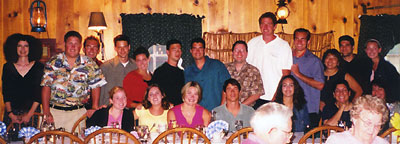
|
|
Enjoying dinner at Hickory Bridge Farm Restaurant,
Gettysburg, PA
|
Our Gettysburg trip over, we took off for Washington D.C.
(and on the way visited the site of another great battle of
the Civil War, Antietam, Maryland) to complete our trip.
Just an hour after arriving in D.C. we had already unpacked
and were on our way to Ford's Theater, where President
Lincoln was assassinated. That evening, our class took a
three-hour night bus tour. With stops at the White House,
Franklin D. Roosevelt Memorial, and Lincoln's Monument (to
name a few), not only were we experiencing the richness of
history displayed in our nation's capitol, but also tying up
some loose ends of our research projects in Gettysburg.
There were new emotional insights into old monuments. While
standing at the top of the stairs of the Lincoln Monument,
many of us were struck by the many layers of knowledge we
had acquired that changed our view of this awesome monument.
All read once more the Gettysburg Address inscribed on the
wall, and looked at the beautiful marble sitting Lincoln. As
we did so, we felt as though we had lived through the battle
(during our days in Gettysburg) and were now ending the
"Gettysburg experience" with the Gettysburg Address, just
like the sequence of events in 1863.
|
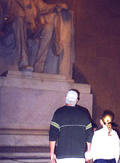
|
|
UCLA students at Lincoln Monument, Washington D.C.
|
Our second day at Washington D.C. was spent at the Arlington
Cemetery in the morning and touring the city in the
afternoon. At the Arlington Cemetery, not only did we watch
the changing of the guards and see the Eternal Flame, but
also most of us toured Robert E. Lee's house, turned into a
cemetery soon after the beginning of the war. Even though
the afternoon went quickly, we managed to see a number of
museums and exhibits throughout the city.
During our last full day of our trip, we traveled to
Richmond, Virginia, to gain a more complete understanding of
the Southern aspect of the Civil War. Touring the Museum of
the Confederacy and the Confederate White House gave us the
Southern viewpoint of the war. We concluded our day by
visiting Richmond's Hollywood Cemetery, a beautiful,
haunting landscape above the James River where 18,000
Confederate soldiers are buried.
|
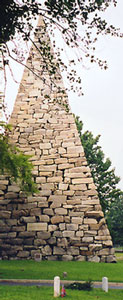
|
|
Confederate monument, Hollywood cemetary, Richmond, VA
|
It was now Monday, August 7th: the last day of the trip.
Sitting around the airport, many of us reflected on the
meaning of the past two weeks. We experienced Gettysburg
firsthand, studying the battle in the classroom at UCLA. Our
trip brought this historic event to life. All of us were
exhausted, but we all agreed that the trip was an incredible
and worthwhile experience. The lectures, research, tours,
exhibits, memories and the friendships are something we will
all cherish the rest of our lives.
|